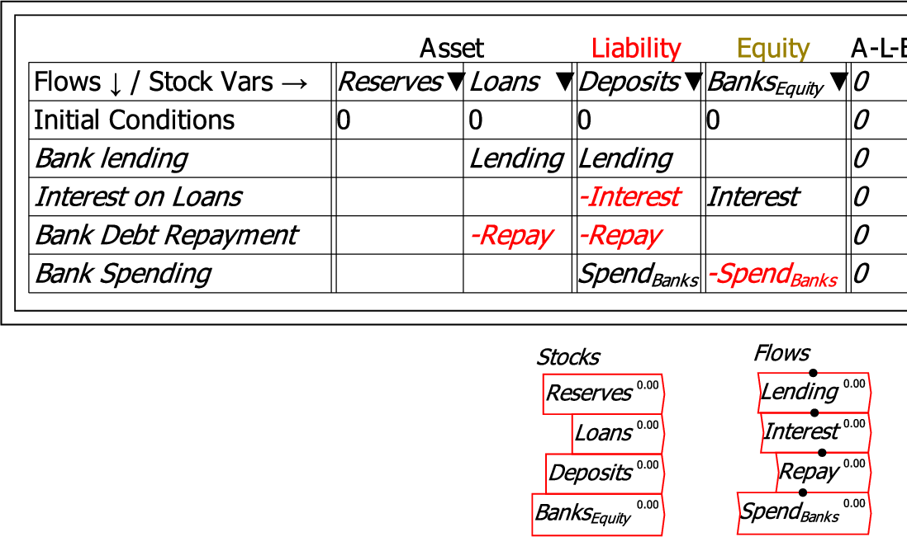

These commands copy all Stocks or all Flows from a Godley Table and attach them to the mouse cursor, for placement on the canvas. The flows can then be defined using Minsky's mathematical operators (Stocks are already completely defined by the Godley Table itself). The next figure shows the result of using both these commands to place all stocks and flows on the canvas.
